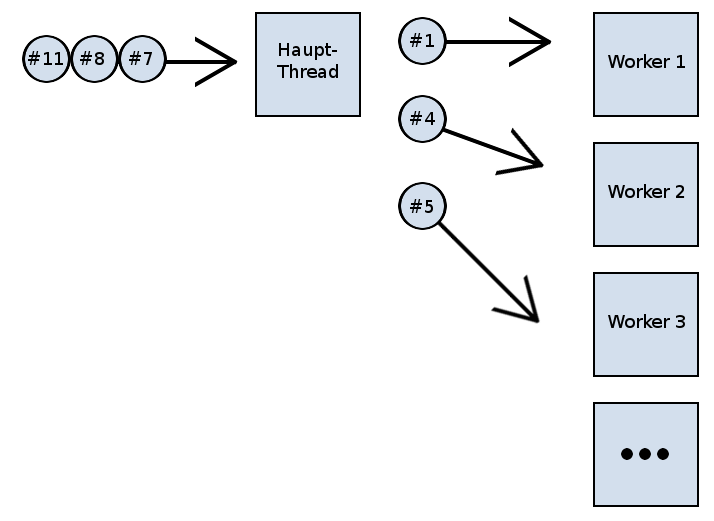
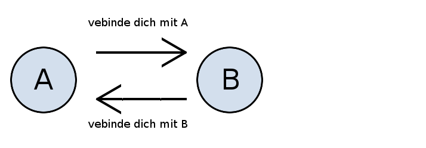
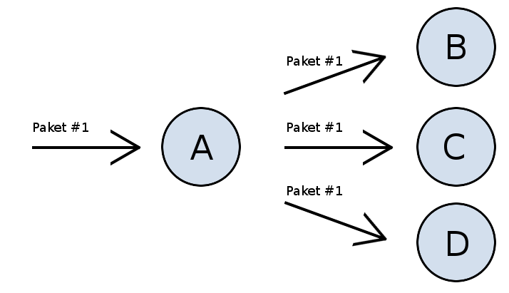
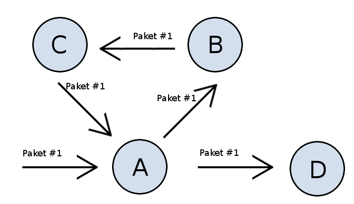

C-Mesh
Routing-Simulation in C
Alain Horner (@elHornair), 30. Juni 2013
Intro
Heads Up
reveal.js is a framework for easily creating beautiful presentations using HTML. You'll need a browser with support for CSS 3D transforms to see it in its full glory.
Lösungskonzept
Funktionsweise der Knoten
- Boss-Worker Modell
- Boss: Auf Paket warten
- Boss: Paket an Worker weitergeben
- Worker: Paket verarbeiten
Funktionsweise der Knoten
Verteilung der Pakete
Verbindungen zu Nachbaren
- Nachbar: Knoten, dessen IP-Adresse und Port bekannt ist
- Nachbaren-Liste
- Bidirektionale Verbindungen -> Handshake
Verbindungen zu Nachbaren
Handshake
Routing
- Routingtabelle mit zwei Einträgen
- Pro Eintrag: IP-Adresse und Port
Routing
- Eigenheit von Aufgabenstellung ausgenutzt:
“Pakete werden immer von der Quelle zum Ziel oder vom Ziel zur Quelle gesendet”
- Routingtabelle möglichst früh anpassen
- Einträge werden nie überschrieben
Paket-Forwarding
- Knoten: Paket weiterleiten, falls nicht für mich
- Routingtabelle verwenden
- Fallback: Flooding
Paket-Forwarding
Flooding
Paket-Forwarding
Problem mit ringförmig verbundenen Knoten
Placeholder
- placeholder
- placeholder
- placeholder
Erreichen des Ziels
- Nur bei Quell- und Zielknoten möglich
- Ausgabe der Nachricht
- Umwandlung des Nachrichtenpakets in OK-Paket
- Routing sehr einfach
- Schwarze Liste wird ignoriert
- OK-Paket: Zurück bis zu ursprünglichem Sender
Lessons learned?
Demo?
Pretty Code
function linkify( selector ) {
if( supports3DTransforms ) {
var nodes = document.querySelectorAll( selector );
for( var i = 0, len = nodes.length; i < len; i++ ) {
var node = nodes[i];
if( !node.className ) ) {
node.className += ' roll';
}
};
}
}
Courtesy of highlight.js.
Fragmented Views
Hit the next arrow...
... to step through ...
any type- of view
- fragments
Fragment Styles
There's a few styles of fragments, like:
grow
shrink
roll-in
fade-out
highlight-red
highlight-green
highlight-blue
Outro
Spectacular image!